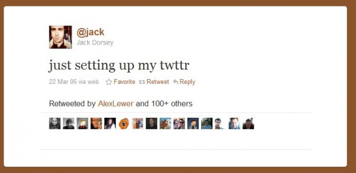

Сегодня день рождения твиттера. Я в твиттере относительно недавно, а сам сервис микроблогов существует уже целых 5 лет.
Первое собщение от Jack Dorsey оставленное 21 марта 2006 года выглядит вот так:

На сегодняшний день аудитория Твиттера насчитывает около 140 миллионов человек. Для сравнения во всей России немногим больше 140 миллионов жителей.
- Ежедневно пользователи Твиттера оставляют около 65 миллионов сообщений, что примерно равно 9 гигабайтам. Если каждый байт представить в виде одного кубического миллиметра, то твиты ежедневно могли бы заполнять Великий каньон.
Но это не вся активность людей в сети
- На сервисе Flickr в настоящее время размещено около 5 миллиардов фотографий. Их общий объем — около 14 петабайт.
- Фотографии на Фейсбуке к концу 2011 года будут занимать уже 60 петабайт. Если каждый байт представить в виде 1 галлона (~4,55 литра), то этот объем наполнил бы Мексиканский залив.
- На Youtube пользователями ежедневно выгружается около 10 терабайт видео. По мнению учёных именно такой объем информации храниться в человеческом мозге.
- Объём все информации, созданной человечеством равняется на сегодняшний день 295 эксабайтам. Это в 30 раз больше, чем количество муравьёв на планете.
Ссылки по теме: